Arthentic mengikat karya seni fisik ke identitas digital yang sulit dipalsukan: chip kriptografi anti-kloning, sidik jari serat mikro berbasis AI, dan catatan provenance permanen di blockchain.
Keaslian karya seni masih dibuktikan dengan selembar kertas, tanda tangan basah, dan catatan galeri. Semuanya berada di luar karya itu sendiri.
Dokumen tidak terikat secara kriptografis pada objek fisiknya. Bisa dicetak ulang oleh pihak tak berwenang, rusak karena usia, hilang, atau dimanipulasi saat perpindahan tangan di pasar gelap.
Tag konvensional murah hanya mengirim teks/URL statis yang identik di setiap pemindaian ponsel. Sekali disalin ke chip kosong lain seharga ribuan rupiah, salinannya dianggap valid selamanya.
Penjualan luring berpindah tangan secara privat tanpa jejak audit publik. Saat lukisan muncul 10 tahun kemudian, riwayat kurasi dan restorasi masa lalunya mustahil dibuktikan secara objektif.
Token digital di masa lalu hanya menunjuk URI gambar web, bukan ke struktur fisik kanvas. Akibatnya, token bisa diperdagangkan sementara lukisan aslinya tertinggal, tertukar, atau dicuri.
Ketidakpastian otentisitas memicu kerugian finansial, reputasi hancur, dan sengketa berkepanjangan bagi seluruh pihak.
Anda membayar miliaran rupiah di pasar sekunder. Tiga tahun kemudian, keaslian sertifikat diragukan oleh kurator independen, dan tidak ada cara objektif untuk membuktikan lukisan itu asli. Nilai investasi menguap seketika.
Karya Anda dipalsukan dan diperjualbelikan atas nama Anda. Anda tidak menerima royalti sepeser pun dari penjualan sekunder, sementara reputasi dan dedikasi bertahun-tahun ikut dipertaruhkan.
Satu insiden pemalsuan lolos kurasi mampu meruntuhkan reputasi galeri selama puluhan tahun. Anda menanggung beban risiko hukum perantara tanpa instrumen audit kriptografis yang dapat diverifikasi publik.
Bahkan jika satu lapisan dirusak, dua lapisan lainnya tetap mampu membuktikan keaslian lukisan secara independen.
Setiap kali chip didekatkan dengan ponsel (tap), chip menghitung token kriptografi dinamis sekali pakai (AES-128, Secure Unique NFC Message / SUN).

Karya seni fisik memiliki topografi serat mikro yang unik seperti sidik jari manusia. Sensor LiDAR dan lensa makro memindai 5–10 koordinat mikroskopis kanvas.
Identitas karya seni dicetak sebagai sertifikat NFT standar ERC-721 di jaringan Base L2 Ethereum. Seluruh riwayat verifikasi tersimpan abadi dan tahan sensor.
Proses verifikasi phygital tanpa friksi yang mengamankan setiap tahap siklus hidup karya seni fisik.
Galeri/Verifier memindai serat kanvas, menempelkan chip tamper-evident, lalu mencetak Genesis NFT ke wallet seniman.
Pembeli menyetor dana ke smart contract escrow terdesentralisasi. Dana dan NFT terkunci tanpa bisa dicurangi perantara.
Lukisan fisik dikirimkan secara aman ke pembeli dengan kemasan khusus bersegel tamper loop dan asuransi transit.
Pembeli menempelkan smartphone ke chip karya. Token valid langsung memindahkan hak milik NFT dan mencairkan dana escrow.
Konservator menambahkan catatan teknis perbaikan kondisi fisik lukisan ke log provenance tanpa merusak data genesis awal.
Kolektor atau pembeli sekunder mengaudit seluruh rekam jejak secara terbuka, dengan 5% royalti otomatis kembali ke seniman.
Setiap pihak memegang kunci kriptografis dan tanggung jawab masing-masing dalam jaringan.
Menandatangani keaslian awal secara gasless dan menerima royalti otomatis 5% (ERC-2981) di setiap penjualan kembali di pasar sekunder.
Memindai mikro kanvas, menempelkan chip tamper-evident, mengunggah sertifikat provenance, dan mencetak Genesis NFT resmi.
Membayar lewat escrow aman, memverifikasi keaslian dengan satu tap ponsel, menyimpan karya dalam brankas digital, atau menjual kembali.
Memperbarui status log kondisi fisik karya pasca restorasi atau pembersihan pigmen tanpa merusak data genesis awal.
Mengaudit rekam jejak kepemilikan dan validitas tanda tangan kriptografis secara publik sebelum melakukan transaksi bernilai tinggi.
Memvalidasi integritas token NFC dan komputasi kemiripan optik secara off-chain sebelum menerbitkan attestation resmi ke smart contract.
Uji coba langsung bagaimana sistem mendeteksi karya asli dan menggagalkan upaya pemalsuan secara real-time.
Dekripsi AES-128 SUN Message dan cek sirkuit tamper loop.
Pindai 5 titik serat mikro atau klik tombol otomatis.
Attestation EIP-712 dicatat on-chain secara permanen.
Dibangun di Base L2, bukan Ethereum L1, sehingga biaya transaksi tidak menghalangi pemeriksaan berkala bagi kurator dan kolektor.
| Aksi Ekosistem | Estimasi Gas (Base L2) | Catatan Pengguna |
|---|---|---|
| Mint Karya Baru (Genesis NFT) | ~$0,04 – $0,05 | Diterbitkan oleh Galeri Tersertifikasi bersama Seniman |
| Verifikasi Level 1 (NFC Tap) | ~$0,01 – $0,02 | Gas disponsori via paymaster (Gratis bagi pengguna) |
| Verifikasi Level 2 (Optik Mikro AI) | ~$0,02 – $0,03 | Ekstraksi fitur mikroskopis & attestation EIP-712 |
| Pembaruan Restorasi Kondisi | ~$0,02 – $0,03 | Append-only log kondisi oleh Konservator resmi |
| Transfer Kepemilikan (Escrow) | ~$0,02 – $0,03 | Pelepasan dana otomatis + distribusi royalti seniman |
Setiap celah eksploitasi telah diantisipasi dengan arsitektur kriptografi berlapis dan audit kode ketat.
Tiap payload SUN NFC dan tanda tangan EIP-712 menyertakan nonce unik satu kali pakai serta domain separator Base L2 yang kadaluarsa dalam 120 detik.
Smart contract escrow menerapkan guard OpenZeppelin `nonReentrant` dan memperbarui saldo internal sebelum memicu pelepasan transfer ETH/USDC.
Kunci penandatangan attestation disimpan dalam Hardware Security Module (HSM) dengan rotasi otomatis dan sakelar darurat pause multi-role.
Perubahan hak istimewa admin atau verifier mewajibkan persetujuan multi-tanda tangan (3-dari-5) dengan jeda waktu eksekusi (timelock).
Foto cetakan 2D ditolak karena ketiadaan topografi impasto 3D kanvas, dan chip fisik yang dicabut mengalami putus sirkuit antena permanen.
Tanpa seed phrase 12-kata yang membingungkan. Pemulihan akun aman berbasis biometric Face ID dan Apple iCloud / Google Cloud Keychain.
Segala hal yang perlu Anda ketahui tentang protokol otentikasi seni Arthentic.
Bergabunglah sebagai seniman, galeri, kolektor, atau konservator, dan mulai membangun riwayat karya seni yang tidak bisa ditulis ulang.
Mulai dalam kurang dari satu menit. Tanpa seed phrase.
Kami membuat smart wallet aman (ERC-4337) otomatis untuk Anda di Base L2. Tidak ada kata sandi 12 kata yang perlu dihafal.
Masuk untuk memverifikasi, menjual, atau mengelola karya Anda.
Kehilangan perangkat? Pulihkan kunci akses melalui Apple iCloud Keychain atau Google Password Manager.